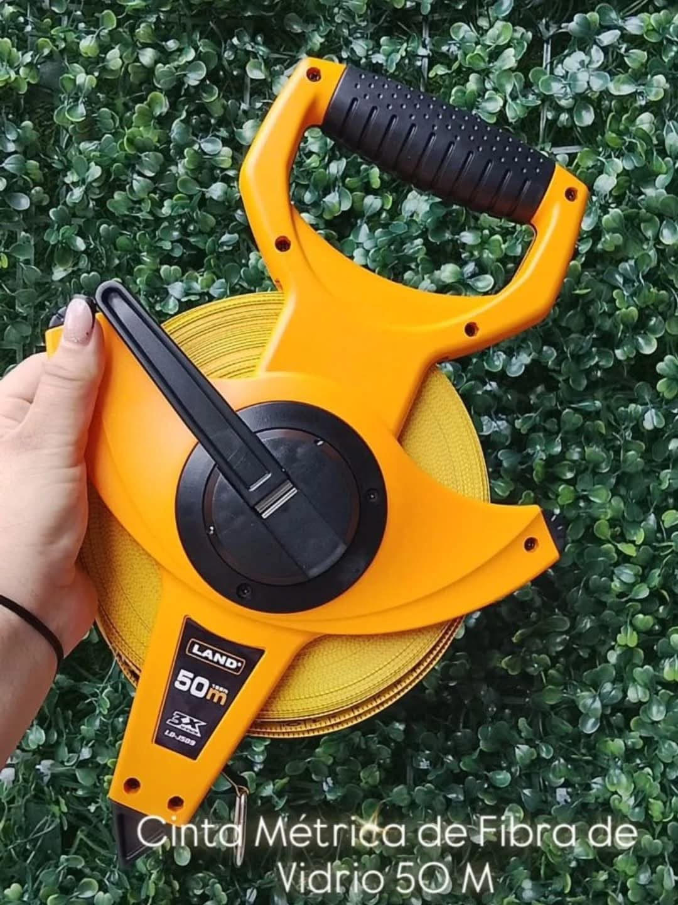
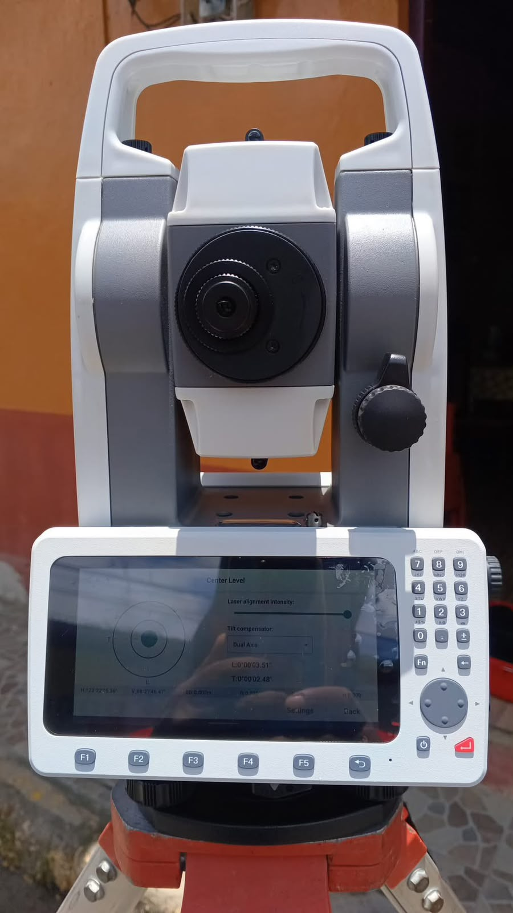
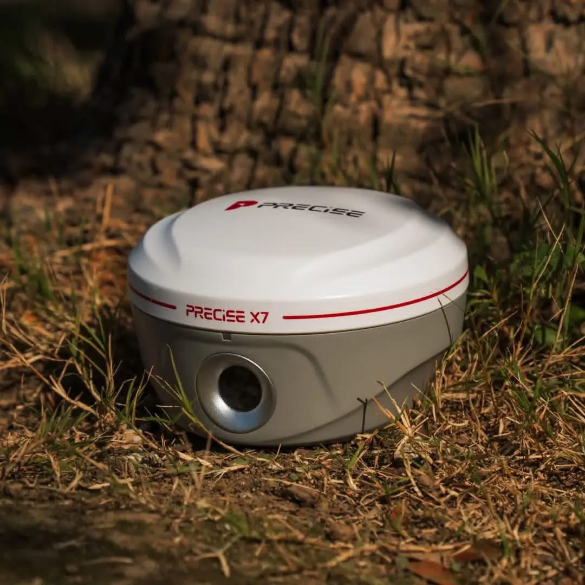

Misión
Convertir la precisión en confianza
Brindar equipos, accesorios y servicios técnicos de alta calidad, acompañados por asesoría especializada y atención responsable.
Venta, reparación y calibración de equipos topográficos con respaldo técnico confiable para que cada medición avance con certeza.

Más de una década siendo el aliado estratégico de topógrafos, ingenieros y constructores en Nicaragua.
Brindar equipos, accesorios y servicios técnicos de alta calidad, acompañados por asesoría especializada y atención responsable.
Consolidarnos como la empresa líder en soluciones topográficas, reconocida por innovación, confiabilidad y servicio profesional.
Entregamos la orientación, disponibilidad y respaldo que el trabajo de campo exige.
Conversemos sobre tu proyectoRecibe opciones claras y adecuadas al alcance real de tu proyecto.
Equipos e instrumentos para atender proyectos de distinta escala.
Te ayudamos a elegir la configuración correcta para trabajar con seguridad.
Explora los productos destacados. Cada ficha se expande con especificaciones, aplicaciones y contenido incluido.
Catálogo completo
Resistente, ligera y fácil de transportar para mediciones confiables en campo.

Solución completa para levantamientos con precisión y productividad.

Base y rover para posicionamiento de alta precisión en proyectos exigentes.
Diagnóstico, reparación, calibración, formación y repuestos desde un solo centro especializado.
Reparamos estaciones totales, niveles, GPS/GNSS y accesorios de distintas marcas con diagnóstico previo y procesos responsables.
Solicitar diagnósticoEvaluación y presupuesto detallado antes de intervenir.
Trabajo técnico y repuestos adecuados para cada equipo.
Pruebas de funcionamiento y garantía según el servicio.
Comprobamos y ajustamos el desempeño de tus instrumentos para reducir desviaciones y proteger la calidad de tus levantamientos.
Agendar calibraciónRecibe orientación práctica para configuración, operación, cuidado y buenas prácticas de uso en campo.
Consultar tutorialesTrípodes, bastones, prismas, baterías, cargadores y repuestos para mantener tus operaciones sin interrupciones.
Buscar accesorioProductos, promociones y recursos para profesionales de la topografía.
Monte Los Olivos, 3 C al norte, 2 C al este, 1 C y 50 varas al sur.
Lunes a viernes · 8:00 a.m. – 5:00 p.m.
Sábado · 8:00 a.m. – 12:00 m.
+505 7610 4551